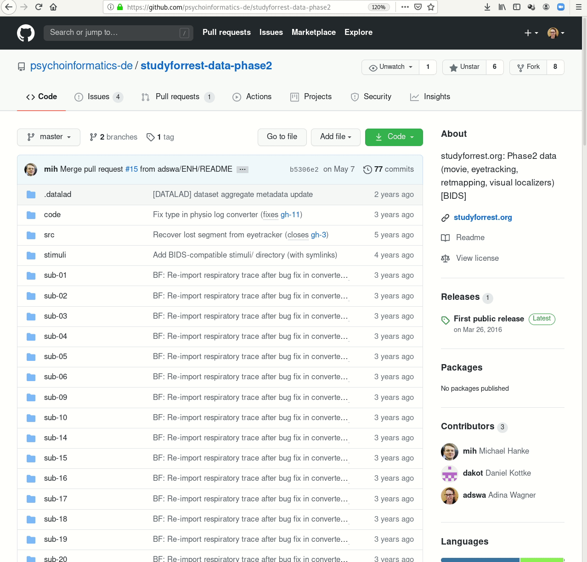
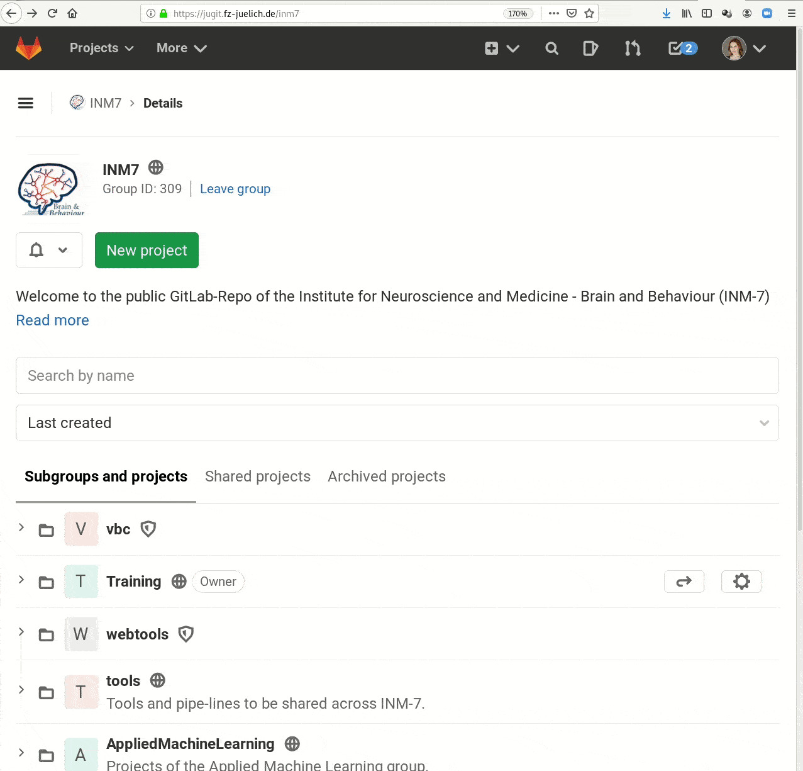

Research data management with DataLad
@ IMPRS-MMFD
3 - Data Publication and Collaboration
Stephan Heunis jsheunis
jsheunis
|
Michał Szczepanik
mslw
|
|
|
Psychoinformatics lab,
Institute of Neuroscience and Medicine (INM-7) Research Center Jülich |
Slides: https://github.com/datalad-handbook/course/
Quick recap

Quick recap

Quick recap

Quick recap

Quick recap

Before we begin...
Any left-over questions from yesterday?Publishing datasets
| How to share your work with others |
Repository hosting services, siblings, and datalad push |
Publishing datasets
I have a dataset on my computer. How can I share it, or collaborate on it?
"Share data like source code"
- Datasets can be cloned, pushed, and updated from and to local and remote paths, remote hosting services, external special remotes
- Examples:
Local path
Remote path../my-projects/experiment_data
Hosting servicemyuser@myinstitutes.hcp.system:/home/myuser/my-projects/experiment_data
External special remotesgit.github.com:myuser/experiment_data.gitosf://my-osf-project-id

Interoperability
- DataLad is built to maximize interoperability and use with hosting and storage technology
Interoperability
- DataLad is built to maximize interoperability and use with hosting and storage technology
Glossary
- Sibling (remote)
- Linked clones of a dataset. You can usually update (from) siblings to keep all your siblings in sync (e.g., ongoing data acquisition stored on experiment compute and backed up on cluster and external hard-drive)
- Repository hosting service
- Webservices to host Git repositories, such as GitHub, GitLab, Bitbucket, Gin, ...
- Third-party storage
- Infrastructure (private/commercial/free/...) that can host data. A "special remote" protocol is used to publish or pull data to and from it
- Publishing datasets
- Pushing dataset contents (Git and/or annex) to a sibling using datalad push
- Updating datasets
- Pulling new changes from a sibling using datalad update --merge
Sharing datasets
- Most public datasets separate content in Git versus git-annex behind the scenes

Sharing datasets

Sharing datasets

Sharing datasets
Typical case:- Datasets are exposed via a private or public repository on a repository hosting service
- Data can't be stored in the repository hosting service, but can be kept in almost any third party storage
-
Publication dependencies automate pushing to the correct place, e.g.,
$ git config --local remote.github.datalad-publish-depends gdrive # or $ datalad siblings add --name origin --url git@git.jugit.fzj.de:adswa/experiment-data.git --publish-depends s3

Sharing datasets
- Real-life example 1:
GitHub for repository hosting, data hosting via datapub.fz-juelich.de + GNODE

Sharing datasets
- Real-life example 2:
GitLab for repository hosting, data hosting via internal webserver (access restricted)

Sharing datasets
- Real-life example 3:
GitHub for repository hosting, data hosting via Amazon S3 (requires DUA)

Sharing datasets
Special case 1: repositories with annex support

Sharing datasets
Special case 2: Special remotes with repositories

Sharing datasets
Special case 1: repositories with annex support
[LIVE DEMO GIN]
Sharing datasets
Special case 2: Special remotes with repositories
Requires the DataLad extension datalad-osf
[You'll be doing this yourself in a short while...]
Sharing datasets
-
DataLad can create siblings from the command line for the following services:
- GitHub
datalad create-sibling-github- GitLab
datalad create-sibling-gitlab- Gin
datalad create-sibling-gin- Gogs
datalad create-sibling-gogs- local or remote paths
datalad create-sibling- RIA stores
datalad create-sibling-ria- Open Science Framework (needs datalad-osf)
datalad create-sibling-osf- WebDAV-based hosting (e.g., Sciebo, EOSC; needs datalad-next)
datalad create-sibling-webdav
(Additional services being worked on at this moment: Dataverse, ebrains;
Get in touch with additional service support requests)
Cloning DataLad datasets
How does cloning dataset feel like for a consumer?
Cloning DataLad datasets
How does cloning dataset feel like for a consumer?
Cloning DataLad datasets
How does cloning dataset feel like for a consumer?
Cloning DataLad datasets
Let's take a look at the special cases:[LIVE DEMO CLONING GIN]
Cloning DataLad datasets
Let's take a look at the special cases:Requires the DataLad extension datalad-osf
[You'll be doing this yourself in a short while...]
Summary: Data publication
- datasets can have "siblings", linked clones in other places
- Those can be local or remote, on commercial, free, or personal infrastructure
- Typical repository hosting services do not host annexed contents
- A notable exception is Gin
- Typical storage providers do not host Git repositories
- but datalad extensions can make it possible for certain services, such as the OSF
- Despite the different possible services, operations are streamlined
- clone installs datasets, get retrieves data, push publishes (new changes in) datasets, update pulls dataset updates. This remains the case even if underlying data hosting changes.
- Siblings serve multiple purposes:
- Personal back-up that's easy to sync; Publicly or privately exposed files to share with (selected) others; Entrypoints for collaborations or others' contributions; ...
Publish your own dataset
Based on: psychoinformatics-de.github.io/rdm-course/03-remote-collaboration/index.html#publishing-datasets-to-ginPublishing to OSF
create-sibling-osf
(docs)- Log into OSF
- Create personal access token
- Enter credentials using
datalad osf-credentials:
datalad osf-credentials
4. Create the sibling:
datalad create-sibling-osf -d . -s my-osf-sibling \
--title 'my-osf-project-title' --mode export --public
5. Push to the sibling:
datalad push -d . --to my-osf-sibling
6. Clone from the sibling:
cd ..
datalad clone osf://my-osf-project-id my-osf-clone
Publication and Collaboration Exercise
replace GIN with OSF


datalad clone ...datalad save ...datalad create-sibling-osf ...datalad push ...datalad remove ...datalad clone ...datalad save ...datalad push ...Any other attendee could be a collaborator
datalad siblings add ...datalad update ...datalad push ...